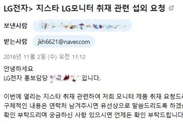
생각을 전하는 글쓰기
생각을 쉽게 표현할 수 있는 방법에 대한 고민
- 블로그 리뷰가 포털에서 '사이퍼즈' 검색 시 글이 상위권에 노출
- 2016년 LG전자 지스타 부스 유료 취재 의뢰
- 네오플 공식 블로그 게임 행사 취재 의뢰
Game Designer Portfolio
데이터와 피드백으로 재미를 검증하며 콘텐츠 · 시스템 · 레벨을 설계합니다.
기획 의도와 플레이 경험의 차이를 확인하고, 개선 방향을 설계합니다.
About Me
게임 CS를 시작으로 QA와 기획 업무를 맡으며 유저 대응, 품질 검증, 게임 설계 경험을 쌓았습니다.
이를 통해 유저가 어떻게 플레이하고 무엇을 느낄지 고려해 설계하는 것이 중요하다는 점을 배웠습니다.

생각을 쉽게 표현할 수 있는 방법에 대한 고민
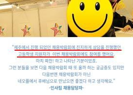
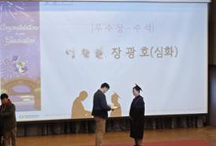
필요한 지식을 스스로 학습, 지속적인 성장
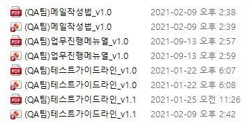
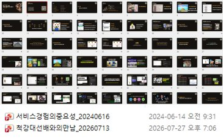
공유를 통한 부족한 점 파악 및 개선
게임 기획(디자인)1년 01개월
게임업계 전체5년 01개월
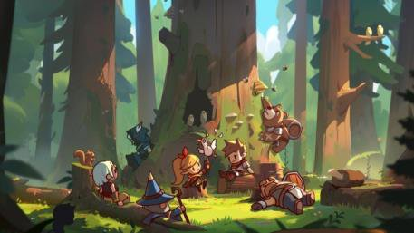
프로젝트 · 모바일 · 2025
보물을 찾아 떠나는 여정, 영웅들을 수집 및 조합하여 활용하는 캐주얼 MORPG. 멕시코 → 캐나다 순차 소프트런칭.
컴투스 퍼블리싱 프로젝트 (개발 인력: 총 33명 중, 게임 디자이너 5명)
게임 디자이너로 입사해 처음으로 담당하게 된 상용화 프로젝트입니다. 퀘스트 디자인을 시작으로 레벨 및 몬스터 컨셉 기획 등 다양한 업무를 수행했습니다. 인력 공백 상황에서는 게임 내 데이터 테이블 구조를 관리하며, 신규 입사자의 업무 적응을 도왔습니다. 추가로 퍼블리셔(컴투스)와 소통하며 로컬라이징 데이터의 업데이트 일정을 조율하고, 인게임 반영 방안을 논의했습니다.
멕시코 소프트런칭 데이터를 분석한 결과, 메인 퀘스트 진행 중 반복 이동 동선에서 이탈이 집중되는 것을 확인했습니다. 백트래킹 최소화를 중심으로 퀘스트 복잡도를 완화하고 몬스터 배치 간격을 조절해 전체 동선을 개편했습니다. 그 결과 캐나다 소프트런칭에서 D+1 리텐션 지표가 약 28%p 향상되었습니다. 감으로 고치기보다 이탈 지점을 데이터로 먼저 찾아 분류, 분석한 뒤 수정 범위를 정하는 방식으로 작업을 진행했습니다.
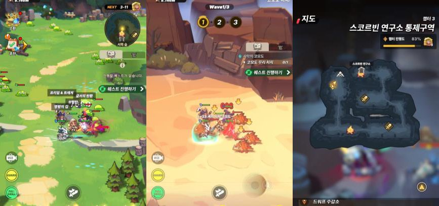
8개 국어 로컬라이징 데이터를 수기로 적용하며 발생하는 비효율을 개선하고자, AI를 활용해 VBA 기반의 자동화 툴을 직접 제작했습니다. 데이터 병합 및 검수 과정을 자동화하여 기존 8시간이 소요되던 작업을 3시간으로 단축했습니다. 이 경험을 통해 단순 반복 업무를 시스템화하여 효율을 높이는 중요성을 배웠으며, 실무 문제 해결을 위해 AI를 적극적으로 활용하는 역량을 길렀습니다.
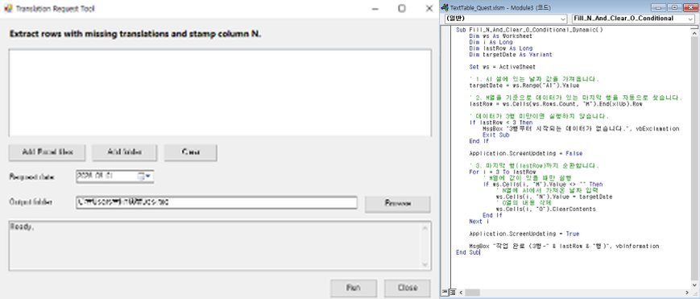
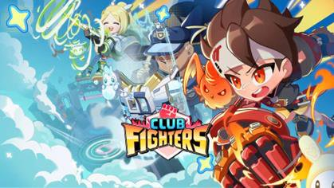
프로젝트 · 모바일 · 2024
LG 산학 협력으로 개발한 캐릭터 수집형 액션 격투 게임. 납품 완료.
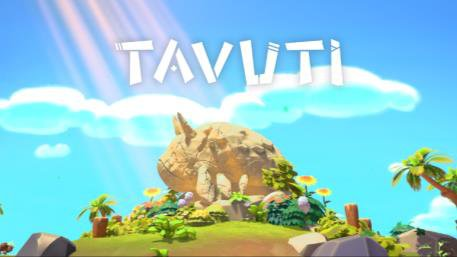
프로젝트 · PC · 2023
고래신을 찾아 떠나는 '타부티'의 이야기, 퍼즐을 해결하며 숲을 탐험하는 3D 플랫폼 어드벤처. 스팀 · 스토브 인디 런칭.
청강문화산업대학교 졸업 작품 (개발 인력: 총 17명 중, 게임 디자이너 2명)
대학교 졸업 작품으로 시작해 스팀과 스토브 인디에 정식 런칭한 프로젝트입니다. 시스템 기획과 3D 월드 맵 전체 지형 디자인을 담당했으며, 외부 행사 및 플랫폼 담당자와의 커뮤니케이션을 병행했습니다. 처음 설계해 보는 3D 월드 맵이었지만, 단순히 공간을 만드는 것이 아닌 유저의 플레이 템포에 맞춰 긴장과 이완을 고려했습니다. 학기 종료 후에도 꾸준히 유지보수를 진행한 결과, 지스타, 플레이엑스포, BIC 등 주요 게임 행사에 초청되어 전시를 진행했고 6회 수상 성과를 거두었습니다.
3D 맵 구조와 동선 전체를 설계하며 그레이박싱으로 조작감을 사전 검증했습니다. 아트 팀과 협업해 프랍을 모듈화해 직접 배치했습니다. 오브젝트로 시야를 가려 아이템을 숨기고 발견했을 때 성취감을 느끼게 하거나, 길을 숨겨 이를 찾기 위해 맵을 탐험하게 유도하는 등의 배치를 시도했습니다.
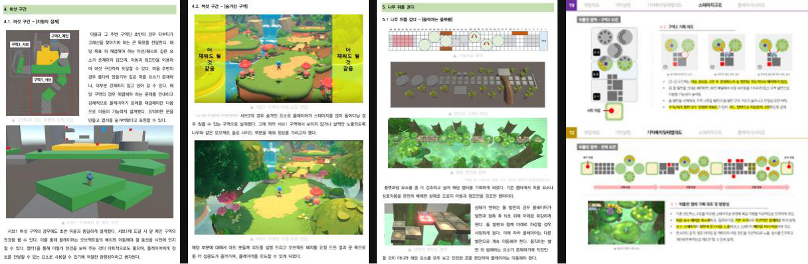
플랫포머 기믹 기획 및 기믹 끼임·동선 이탈 등 예외 상황 방지 업무를 수행했습니다. 실패 스트레스를 줄이기 위해 체크포인트 시스템을 도입하고 난이도를 낮췄습니다. 이를 통해 유저의 이탈 포인트를 보완하게 되었고 그 결과 전시 현장에서 해당 구간을 포기하는 유저가 줄었습니다.
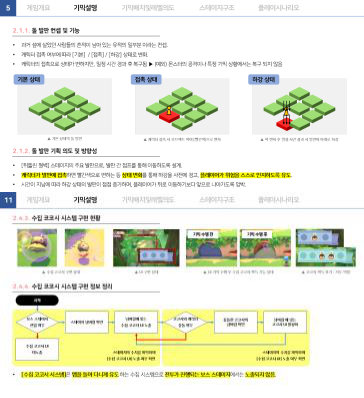
내·외부 작업자 간 파일 유실 및 협업 혼선 리스크를 방지하는 역할을 맡았습니다. 리소스 네이밍 규칙과 브랜치 관리 가이드를 정립 및 배포하여 팀 생산성을 높였습니다. 이를 통해 다직군 협업 리스크를 차단하는 프로세스 구축 및 소통 역량을 길렀습니다.
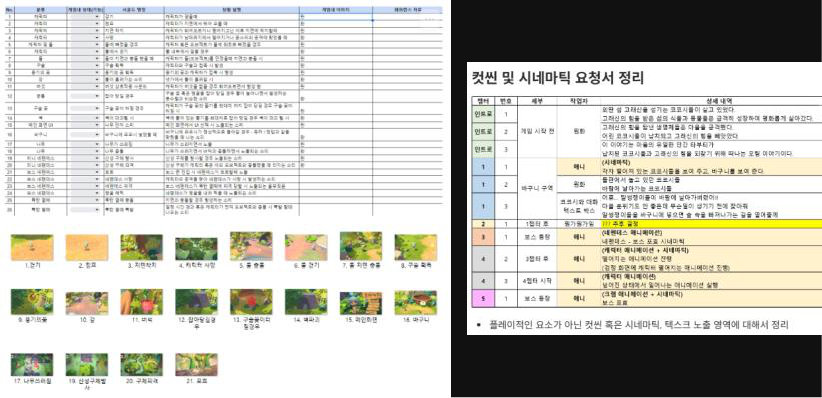
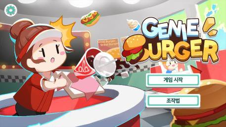
프로젝트 · 모바일 · 2022
KT 메타버스 '지니어스' 탑재용 미니 게임, 음식을 던져 하이스코어를 노리는 하이퍼 캐주얼 게임. KT 산학 프로젝트 3개 팀 중 1등.
KT 산학 협력 프로젝트 (개발 인력: 총 7명 중, 게임 디자이너 2명)
KT 산학 협력을 통해 메타버스 플랫폼 '지니어스'에 탑재될 미니 게임을 개발한 프로젝트입니다. 유저 간 점수 경쟁을 유도하는 하이퍼 캐주얼 게임을 목표로, 맵 지형 디자인과 전체 시스템 기획을 수행했습니다. 몰입도를 높이기 위해 시간 경과에 따른 난이도 상승 곡선을 데이터 테이블로 직접 설계하고 반복 테스트를 거쳐 밸런스를 조정했습니다. 그 결과 좋은 성적을 거두어 비졸업 학년임에도 교내 졸업 전시회에 출품했습니다.
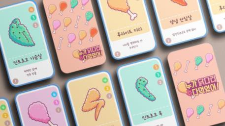
프로젝트 · 보드 게임 · 2022
남들 몰래 더 많은 치킨 카드를 모아 점수를 획득하는 파티 보드 게임. 텀블벅 펀딩 성공 및 실물 제품 출시.
대학 강의를 통해 결성된 팀에서 실물 보드 게임 출품 (개발 인력: 총 4명 중 게임 디자이너 1명)
대학 과제로 시작해 크라우드 펀딩(텀블벅) 성공과 실물 제품 출시까지 이끌어낸 보드 게임 프로젝트입니다. 대중적인 '치킨' 소재와 밈(Meme)을 활용해, 상대의 패를 예측하고 맞추는 캐주얼 추리 파티 게임을 기획했습니다. 펀딩 성공 직후 국제 정세(러시아-우크라이나 전쟁)로 인해 제작 견적 상승으로 예산이 부족해졌습니다. 후원자와의 약속을 지키기 위해 창업 지원금 및 외부 공모전을 통해 추가 자금을 확보했습니다. 이를 통해 예산 부족 문제를 주도적으로 해결하고 실물 게임을 출시할 수 있었습니다.
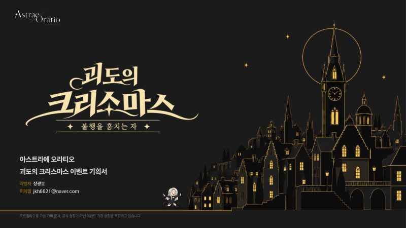
기획서 · 콘텐츠
행동력을 소모하지 않는 미니게임으로 신규 · 복귀 유저도 같은 조건에서 참여하고, 늦게 합류해도 완주할 수 있게 설계한 14일 이벤트.
일반적인 이벤트는 행동력을 소모해 재화를 모으는 구조라, 성장 격차에 따라 보상이 달라집니다. 행동력을 소모하지 않는 미니게임으로 신규 · 복귀 유저도 동일한 조건에서 참여하도록 설계했습니다. 또한 하루 1개씩 스테이지를 개방하고 이벤트 기간을 14일로 설정해, 늦게 합류해도 완주할 수 있도록 설계했습니다.
데이터를 한 번만 쓰고 끝내지 않도록 효율화를 고민했습니다. 개방 조건과 미션 조건을 종류와 값 칼럼으로 분할해, 다른 이벤트에서도 재사용할 수 있도록 설계했습니다. 미션 조건으로 다시 도전할 이유를 만드는 것이 중요하다는 것을 배웠습니다.
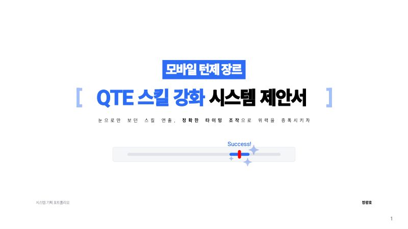
기획서 · 시스템
턴제 전투의 연출 대기 시간에 플레이어가 직접 개입할 수 있도록 QTE를 추가해 전투 몰입감을 높이는 시스템 제안서.
턴제 전투에서 행동을 선택한 뒤 연출이 끝날 때까지 대기 시간이 발생합니다. 해당 대기 시간에 플레이어가 직접 개입할 수 있는 방법을 추가해 전투 몰입감을 높이고자 했습니다. 또한 QTE 패턴을 다양화해 이를 전략적으로 활용하도록 유도하고자 했습니다.
결과만 기다리면 되던 구간에 터치 입력이 추가되면서 오히려 피로도가 높아질 수 있다는 점을 파악했습니다. 이때 피로도를 낮추기 위해 콘텐츠 별로 QTE를 차등하게 적용하거나 상성을 통해 보완하는 등의 방어책이 필요하다고 판단했습니다. 단순하게 콘텐츠를 추가하는 것보다 이에 대한 피로도 증가를 고려하는 것도 중요하다는 것을 느끼게 되었습니다.
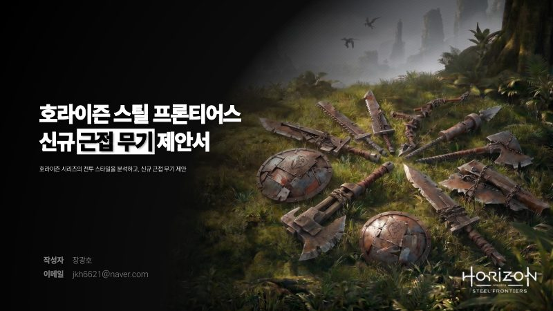
기획서 · 전투
원거리 무기 중심의 호라이즌 시리즈에 근접 무기를 추가해, MMORPG 파티 플레이에서 포지션별 역할을 수행하도록 제안.
원거리 무기 중심으로 설계된 호라이즌 시리즈에 근접 무기를 추가해 전투에서 다양한 전투 상황이 발생하도록 유도하고자 했습니다. 또한 MMORPG의 파티 플레이에서는 포지션별 역할이 필요하기 때문에, 다양한 역할을 수행할 수 있는 무기가 필요하다고 판단했습니다.
무기는 단순히 종류를 늘리는 것이 아니라 그 무기가 수행할 역할부터 정의해야 한다는 것을 배웠습니다. 역할을 어떻게 수행하는지, 다른 무기 대신 이 무기를 선택했을 때 어떤 이점이 있는지까지 함께 고민해야 합니다.
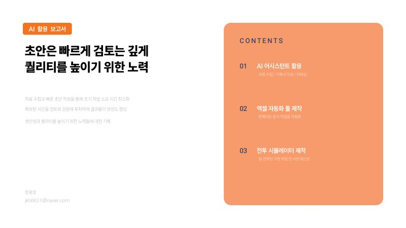
기획서 · AI 활용
초안은 빠르게, 검토는 깊게. 기획 · 개발 문서 초안 작성과 데이터 구조화에 AI 어시스턴트를 활용한 과정과 배운 점.
AI 산출물을 활용하되, 검증 절차를 통해 잘못된 자료와 실수를 방지해야 합니다. 의도한 결과를 얻기 위해 규칙과 요청사항을 명확히 기재하고, 확정된 작업 기준을 MD 파일로 문서화해 세션을 다시 시작해도 같은 맥락이 유지되게 했습니다. 단순한 에러 해결을 묻기보다 '원하는 최종 결과값과 목적'을 질문하는 것이 퀄리티 향상에 도움이 됩니다.
Play Experience
최근 6개월 이내 플레이 게임 – 2026.09 작성
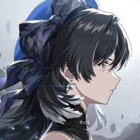
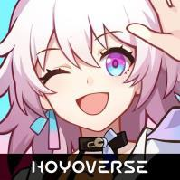
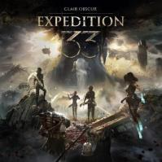
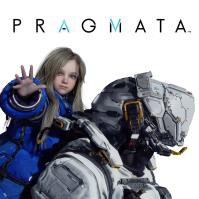
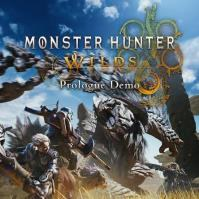
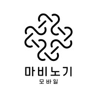
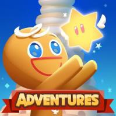
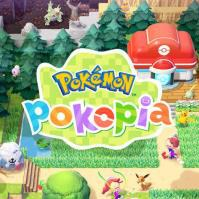
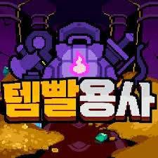